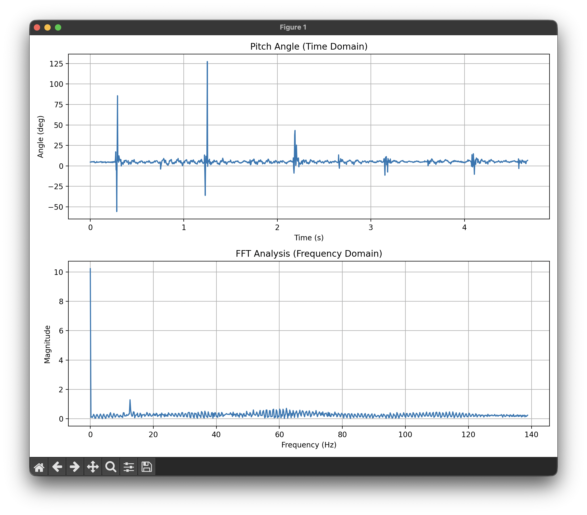
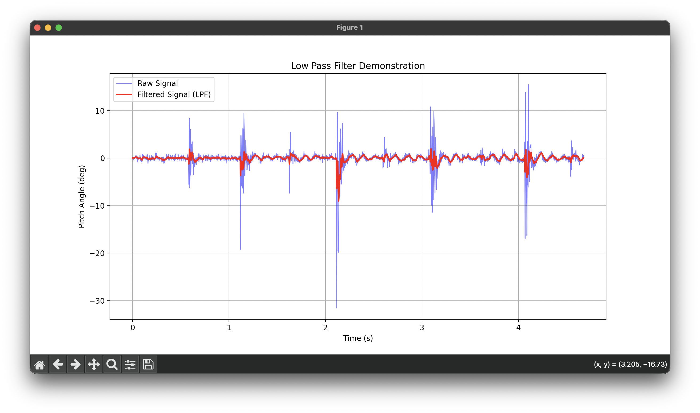
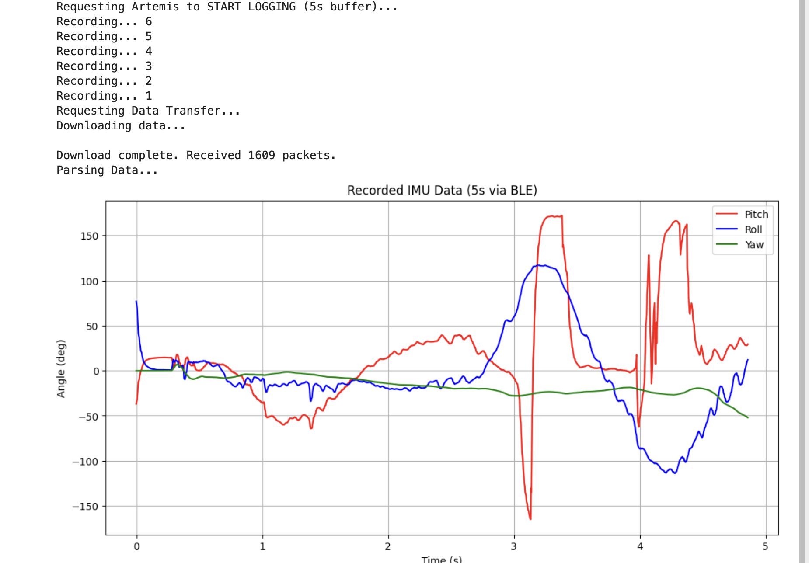

1. IMU Setup & Configuration
For this lab, I connected the Artemis Nano to the SparkFun 9DoF IMU (ICM-20948) using the Qwiic connector. The IMU communicates via I2C.
IMU Blink Demo
Video 1: Artemis board with IMU showing LED blink on successful connection.
AD0_VAL Definition
In the setup code, AD0_VAL represents the last bit of the I2C address. The SparkFun
breakout board defaults this value to 1. If the ADR jumper on the board were closed via solder,
this would change to 0. For my setup, leaving it at 1 established a successful connection.
2. Accelerometer
The accelerometer measures acceleration forces, including gravity. By analyzing the static force of gravity on the X, Y, and Z axes, we can calculate the pitch and roll angles.
Equations & Code Implementation
I implemented the following equations in C++ to convert raw accelerometer data into degrees:
// Calculate Pitch and Roll from Accelerometer
float pitch_a = atan2(myICM.accX(), myICM.accZ()) * 180.0 / M_PI;
float roll_a = atan2(myICM.accY(), myICM.accZ()) * 180.0 / M_PI;Accuracy Test
To verify the accuracy, I held the IMU against the flat edges of a table to achieve -90°, 0°, and 90° readings.
Pitch Tests
-90° Pitch
0° (Flat)
90° Pitch
Roll Tests
-90° Roll
0° (Flat)
90° Roll
Accuracy Discussion:
The accelerometer was surprisingly accurate right out of the box. The readings at the extremes (-90°/90°) were within ~1 degree of the expected values. Because the noise levels were low and the range was accurate, I determined that a two-point calibration was not strictly necessary for basic driving tasks, though it could be implemented to perfect the zero-offset.
Noise & Frequency Analysis
While the accelerometer provides absolute angles, it is susceptible to mechanical noise (vibration). I recorded data while vibrating the table to simulate a running car motor and performed a Fourier Transform (FFT) in Python.
Figure 2: Time domain vibration (top) and FFT Analysis (bottom).
Analysis:
Looking at the FFT graph, there is a massive spike at 0Hz (DC bias/Gravity). However, significant noise appears in the frequency spectrum starting around 10Hz and extending up to 140Hz. Since the car's physical turning movements are relatively slow (typically <5Hz), everything above 10Hz can be considered noise. Based on this, I chose a cutoff frequency of roughly 5-10Hz.
Low Pass Filter (LPF)
I implemented a digital Low Pass Filter on the Artemis using the formula:
y[n] = (alpha)*x[n] + (1-alpha)*y[n-1]Code Implementation:
// Alpha = 0.1 means we trust the new reading 10% and the old value 90%
// This effectively smooths out quick jitters.
#define ALPHA 0.1
pitch_filtered = (ALPHA * pitch_raw) + ((1.0 - ALPHA) * pitch_filtered);With an alpha value of roughly 0.1, the filter successfully removed the "fuzz" from the signal.
Figure 3: The Red line (Filtered) cuts through the noise of the Blue line (Raw).
3. Gyroscope
The gyroscope measures angular velocity (degrees per second). To get the angle, we must integrate velocity over time:
angle = angle + (gyro_rate * dt)Pitch, Roll, and Yaw
Unlike the accelerometer, the gyroscope can measure Yaw (rotation around Z). However, as seen in the tests below, the gyroscope suffers from drift.
Code Implementation:
// Calculate dt (change in time)
float dt = (micros() - last_time) / 1000000.0;
last_time = micros();
// Integrate Angular Velocity
pitch_g = pitch_g + myICM.gyrY() * dt;
roll_g = roll_g + myICM.gyrX() * dt;
yaw_g = yaw_g + myICM.gyrZ() * dt;Observations:
- Drift: The Gyro captures the shape of the movement perfectly (very smooth), but it slowly drifts away from the Accelerometer over time. This is because small errors in the integration accumulate.
- Sampling Frequency: When the sampling rate is low, the integration becomes inaccurate because it misses the "curve" of fast movements, resulting in jagged, blocky output.
Sampling Rate Comparison
High Sampling Rate: Smooth, accurate integration
Low Sampling Rate: Jagged, blocky output
Figure 4: Comparison of gyroscope integration at different sampling rates.
4. Complementary Filter
To solve the "Noise vs. Drift" problem, I implemented a complementary filter. This fuses the two sensors: it trusts the Gyroscope for short-term changes (high pass) and the Accelerometer for long-term stability (low pass).
angle = (alpha)*(angle + gyro*dt) + (1-alpha)*(accel)Figure 5: Complementary Filter (Red) tracking the true movement.
Code Implementation:
// Alpha is usually high (e.g., 0.9) to trust the gyro more for smoothness
pitch_comp = (pitch_comp + myICM.gyrY() * dt) * alpha + pitch_acc * (1.0 - alpha);
roll_comp = (roll_comp + myICM.gyrX() * dt) * alpha + roll_acc * (1.0 - alpha);Discussion:
The result (Red line) is the best of both worlds. It ignores the high-frequency vibrations seen in the Accelerometer (Blue) but snaps back to gravity when the Gyroscope (Green) tries to drift away. This stable signal is what I will use for PID control.
5. Sample Data & Bluetooth
To capture high-speed data for analysis, we cannot rely on real-time printing. Instead, I collected data in arrays on the Artemis and sent it in batches over BLE.
Data Storage Strategy
- Arrays: I chose to use separate arrays (
float pitch[],float roll[], etc.) rather than a large 2D array or array of structs. This kept the C++ implementation simple and modular. - Data Type: I used
float(4 bytes) instead ofdouble(8 bytes) orString. The IMU precision does not require 64-bit doubles, and using floats saves 50% of the RAM. - Memory:
- Each sample is ~16 bytes (Time, Pitch, Roll, Yaw).
- The Artemis has ~96KB of usable RAM.
- I allocated space for 2000 samples (~32KB), which is roughly 1/3rd of the available RAM, leaving plenty of headroom.
5 Seconds of Data
By optimizing the main loop (removing blocking delays), I achieved a sampling rate of approximately 300Hz. The plot below shows over 5 seconds of data captured on the board and transmitted to Python. The motion used during this test was a mix of up, down, left, and down movements to demonstrate the IMU's ability to track complex motion patterns.
Figure 6: Python log showing reception of packets over 5 seconds.
Code Implementation (Data Collection Loop):
if (is_imu_logging && imu_counter < IMU_ARR_SIZE) {
if (myICM.dataReady()) {
// ... (Calculate Pitch/Roll/Yaw) ...
// Store in arrays
imu_time_data[imu_counter] = millis();
pitch_data[imu_counter] = pitch_g;
roll_data[imu_counter] = roll_g;
yaw_data[imu_counter] = yaw_g;
imu_counter++;
}
}6. Stunts
Finally, I took the RC car for a spin to see how the car reacted to aggressive driving.
Video 2: Driving the RC car.
Observations:
Very hard to drive with one hand + high tendency to slip and move in the 3rd axis. :)
AI Usage
AI was used in the HTML side of the website construction.